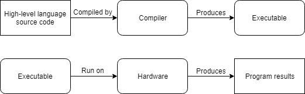
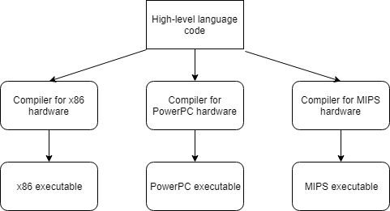

0.2 — 程序与编程语言简介
现代计算机速度极快，并且一直在变得更快。然而，计算机也有一些重要的限制：它们只能原生理解一组有限的指令，并且必须被精确告知要做什么。
一个 计算机程序 是一个指令序列，指导计算机按指定顺序执行特定操作。计算机程序通常是用一种 编程语言，这是一种旨在方便为计算机编写指令的语言。有多种不同的编程语言可用，每种语言满足不同的需求。编写程序的行为（和艺术）被称为 编程。在本章后续课程中，我们将更具体地讨论如何用C++创建程序。
当计算机执行计算机程序指令所描述的操作时，我们说它正在 运行 或 执行 程序。计算机不会开始执行程序，除非被指示。通常需要用户 启动 （或 运行 或 执行）程序，尽管程序也可能由其他程序启动。
程序在计算机的 硬件上执行。，它由构成计算机的物理组件组成。典型计算设备上常见的硬件包括：
- CPU（中央处理器，常被称为计算机的“大脑”），它实际执行指令。
- 内存，计算机程序在执行前加载到其中。
- 交互设备（例如显示器、触摸屏、键盘或鼠标），允许人机交互。
- 存储设备（例如硬盘、固态硬盘或闪存），即使在计算机关闭时也能保留信息（包括已安装的程序）。
相比之下，术语 软件 广泛指系统上设计在硬件上执行的程序。
在现代计算中，程序常常不仅仅与硬件交互——它们还与系统上的其他软件（尤其是操作系统）交互。术语 平台 指提供软件运行环境的兼容硬件和软件（操作系统、浏览器等）集合。例如，“PC”这个术语口语上指由运行在x86系列CPU上的Windows操作系统组成的平台。
平台通常为在其上运行的程序提供有用的服务。例如，桌面应用程序可能请求操作系统给它们一块空闲内存、在某个位置创建文件或播放声音。正在运行的程序无需知道这些是如何实际实现的。如果程序使用了平台提供的能力或服务，它就变得依赖于该平台，并且未经修改就无法在其他平台上运行。能够轻松从一个平台转移到另一个平台的程序被称为 可移植的。修改程序使其在不同平台上运行的行为被称为 移植。
现在我们已经讨论了程序，接下来我们来讨论编程语言。这不仅仅是一堂历史课，我们还将介绍未来课程中会出现的术语。
机器语言
计算机的CPU无法理解C++。相反，CPU只能处理用 机器语言 （或 机器码)。一个特定CPU能够理解的所有机器语言指令的集合被称为 指令集。
以下是一个机器语言指令示例： 10110000 01100001。
每条指令都被CPU理解为一个执行非常具体任务的命令，例如“比较这两个数字”，或“将这个数字复制到那个内存位置”。在计算机刚被发明时，程序员必须直接用机器语言编写程序，这是一件非常困难且耗时的事情。
这些指令如何组织与解释超出了本教程系列的范围，但有几件事值得注意。
首先，每条指令由一串0和1组成。每个单独的0或1被称为 二进制位，或 位 的简称。机器语言指令的位数各不相同——例如，有些CPU处理始终为32位长的指令，而其他一些CPU（例如你可能正在使用的x86系列）的指令可以是可变长度的。
其次，每个兼容CPU家族（例如x86、Arm64）都有自己的机器语言，并且这种机器语言与其他CPU家族的机器语言不兼容。这意味着为一种CPU家族编写的机器语言程序无法在不同的CPU家族上运行！
相关内容
“CPU家族”正式名称是“指令集架构”（简称“ISA”）。维基百科上有一份不同CPU家族的列表 这里。
汇编语言
机器语言指令（例如 10110000 01100001）对CPU来说很理想，但对人类来说难以理解。由于程序（至少历史上）是由人类编写和维护的，因此编程语言应该以人类需求为设计考虑，这是有道理的。
一种 汇编语言 （通常称为 汇编 （简称）是一种编程语言，本质上是一种更易读的机器语言。以下是上述指令在x86汇编语言中的形式： mov al, 0x61。
可选阅读
这条指令展示了汇编语言比机器语言更易读的许多特性。
- 操作（指令的功能）由简短的助记符（通常3-5个字母的名称）标识。
mov很容易理解它是“move”的助记符，即将位从一处复制到另一处的操作。 - 寄存器（CPU内部的快速存储位置）通过名称访问。
al是x86 CPU上特定寄存器的名称。 - 数字可以用更方便的格式指定。汇编语言通常支持十进制数（例如
97）和十六进制数（例如0x61)。
很容易理解汇编指令 mov al, 0x61 将十六进制数 0x61 复制到 al CPU寄存器中。
由于CPU无法理解汇编语言，汇编程序必须先翻译成机器语言才能执行。这种翻译由称为 汇编器。由于每条汇编语言指令通常设计为对应一条等效的机器语言指令，翻译过程通常很简单。
就像每种CPU家族都有自己的机器语言一样，每种CPU家族也有自己的汇编语言（旨在汇编成该CPU家族的机器语言）。这意味着存在许多不同的汇编语言。尽管概念相似，但不同的汇编语言支持不同的指令、使用不同的命名约定等……
低级语言介绍
机器语言和汇编语言被认为是低级语言，因为这些语言提供了对机器架构的最小抽象。换句话说，编程语言本身是针对其运行的具体指令集架构量身定制的。
低级语言有一些显著的缺点：
- 用低级语言编写的程序不可移植。由于低级语言是为特定指令集架构量身定制的，因此用该语言编写的程序也是如此。将这些程序移植到其他架构通常很复杂。
- 用低级语言编写程序需要对架构本身有详细的了解。例如，指令
mov al, 061h需要知道al指的是该特定平台上可用的CPU寄存器，并理解如何使用该寄存器。在不同的架构上，该寄存器可能名称不同、具有不同的限制或根本不存在。 - 低级程序难以理解。虽然单个汇编指令可能相当易懂，但仍然很难推断出一段汇编代码实际在做什么。而且由于汇编程序即使执行简单任务也需要大量指令，它们往往相当冗长。
- 编写复杂程度较高的汇编程序很困难，因为该语言只提供原始能力。程序员需要自己实现所需的一切。
低级语言的主要优点是速度快。当存在对性能至关重要的代码段时，汇编至今仍在使用。它也在其他一些情况下使用，我们稍后将讨论其中一种。
高级语言入门
为了解决上述许多缺点，新的“高级”编程语言如C、C++、Pascal（以及后来的语言，如Java、JavaScript和Perl）被开发出来。
以下是C/C++中相同的指令： a = 97;。
与汇编程序（必须汇编成机器语言）非常相似，用高级语言编写的程序在运行之前必须转换为机器语言。主要有两种方式：编译和解释。
C++程序通常被编译。 编译器 是一个（或一组）程序，它读取一种语言（通常是高级语言）的源代码，并将其翻译成另一种语言（通常是低级语言）。例如，C++编译器将C++源代码翻译成机器代码。
可选阅读
大多数C++编译器也可以配置为生成汇编代码。当程序员想查看编译器为程序的某个部分生成了哪些具体指令时，这很有用。
编译器输出的机器代码可以打包成可执行文件（包含机器语言指令），分发给其他人并由操作系统启动。值得注意的是，运行可执行文件不需要安装编译器。
最初，编译器很原始，生成的汇编或机器代码速度慢且未优化。然而，多年来，编译器已经变得非常擅长生成快速、优化的代码，在某些情况下甚至比人类做得更好！
以下是编译过程的简化表示：

或者，一个 解释器 是一个直接执行源代码中的指令的程序，无需先进行编译。解释器往往比编译器更灵活，但在运行程序时效率较低，因为每次运行程序时都需要执行解释过程。这也意味着解释器必须安装在每个将要运行解释程序的机器上。
以下是解释过程的简化表示：
大多数高级语言既可以编译也可以解释。传统上，像C、C++和Pascal这样的高级语言是编译的，而像Perl和Javascript这样的“脚本”语言倾向于解释。有些语言，如Java，混合使用两者。我们稍后将更详细地探讨C++编译器。
高级语言的优势
高级语言之所以这样命名，是因为它们提供了与底层架构的高度抽象。
考虑指令 a = 97;. 该指令允许我们存储值 97 在内存中的某个位置，无需确切知道该值将放在哪里，或者CPU需要什么特定的机器码指令来存储该值。实际上，这个指令根本没有平台特异性。编译器完成了所有工作，来弄清楚这条C++指令如何转换为平台特定的机器码。
高级语言允许程序员在不太了解程序将在其上运行的平台的情况下编写程序。这不仅使程序更容易编写，而且使它们具有显著的可移植性。如果我们小心，我们可以编写一个单一的C++程序，该程序将能在每个拥有C++编译器的平台上编译！一个设计用于在多个平台上运行的程序被称为 跨平台。

进阶读者
以下是可能阻碍C++代码可移植性的一些因素的列表：
- 许多操作系统，如Microsoft Windows，提供你可以在代码中使用的平台特定功能。这些功能可以让你更容易地为特定操作系统编写程序，或者提供比原本可能更深度的与操作系统的集成。
- 许多第三方库仅在某些平台上可用。如果你使用了其中之一，你将受限于该库所支持的平台。
- 一些编译器支持编译器特定的扩展，这些是仅在该编译器中可用的功能。如果你使用了这些扩展，你的程序将无法被不支持相同扩展的其他编译器编译（除非进行修改）。一旦你安装了编译器，我们稍后会再讨论这些。
- 在某些情况下，C++语言允许编译器决定某个行为应该如何执行。我们将在课程中进一步讨论这一点 1.6 -- 未初始化的变量和未定义行为 在“实现定义行为”部分。
如果你只针对单一平台，那么可移植性可能不那么重要。但如今许多应用程序为了扩大覆盖面而针对多个平台。例如，一个移动应用可能希望同时针对iOS和Android。
即使可移植性最初看起来没什么用，许多最初只针对单一平台（例如PC）的应用程序在取得一定成功和关注后，决定移植到其他平台（例如Mac和各种游戏机）。如果你一开始不考虑可移植性，那么后续移植你的应用程序将需要更多工作。
在这些教程中，我们将尽可能避免使用平台特定的代码，这样我们的程序就能在任何拥有现代C++编译器的平台上运行。
高级语言还有其他优点：
- 用高级语言编写的程序更容易阅读、编写和学习，因为其指令更贴近我们日常使用的自然语言和数学。在许多情况下，高级语言执行与低级语言相同的任务所需的指令更少。例如，在C++中，你可以编写
a = b * 2 + 5;在一行内完成。而在汇编语言中，这需要4到6条不同的指令。这使得用高级语言编写的程序更加简洁，从而更容易理解。 - 高级语言通常包含额外的功能，使得执行常见的编程任务更加容易，例如请求一块内存或操作文本。例如，只需要一条指令就能判断字符“abc”是否存在于一大块文本中（如果存在，需要检查多少个字符才能找到“abc”）。这可以大幅降低复杂性和开发时间。
术语
尽管C++在技术上被认为是高级语言，但较新的编程语言（例如脚本语言）提供了更高层次的抽象。因此，相比之下，C++有时会被不准确地称为“低级语言”。
作者注
如今，C++可能更准确地被描述为中级语言。然而，这也突显了C++的一个关键优势：它通常提供在不同抽象层次上工作的能力。你可以选择在较低层次操作以获得更好的性能和精度，或者在较高层次操作以获得更大的便利性和简洁性。
规则、最佳实践和警告
随着我们学习这些教程，我们将把许多重要点归类到以下三类中：
规则
规则是你 必须 按照语言要求去做的指令。不遵守规则通常会导致你的程序无法运行。
最佳实践
最佳实践是你 应该 去做的事情，因为那种做法要么是惯例（惯用方式），要么是推荐的。也就是说，要么大家都那么做（如果你不那样做，你会做一些人们不期待的事情），要么它通常优于其他替代方案。
警告
警告是你 不应该 做的事情，因为它们通常会导致意想不到的结果。